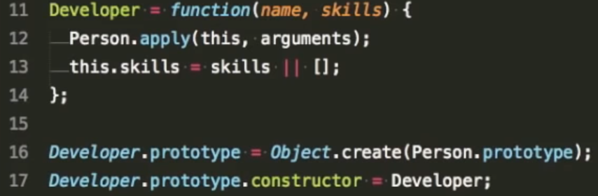

Why do we need it
Imagine, that we need to create many objects of the same type
Of course, we can do it like this:
Like this:
It's very easy to implement
Let's add one more method

Also we have access to the properties and methods of the parent class
Constructors call with a capital letter
Each function has a "prototype" property
We can add any properties and methods and they will be accessible by the whole instance of the class
All objects that are created using the constructor are assigned the constructor property

But...
This property is supported differently by browsers
And in general...
better never use it
It's have same realization
We also use the "create" method

instanceof in the object chain
Almost all objects inherit their properties from the Object.prototype object
We can override the method on the prototype class
Functions are also objects. Therefore, they also inherit methods from Object.prototype

When we call the toString () method - the second word is the class of the object that cannot be changed. The toString () method is the only way to get an object class
We can create a small function, which will return an object class
ES6 Classes
Basic moments:
- Capital class must be capitalized
- There is a special "constructor" method
- We can implement methods
- Ability to implement static methods / variables

Static method


Why...
Why do we need it
We can arrange for full inheritance!

Inheritance occurs using the key word "extends"


Inheritance chain looks like this
What if we want add one more field for our new class


We can rewrite parent methods and also access them


Get


Set


Thanks for attention